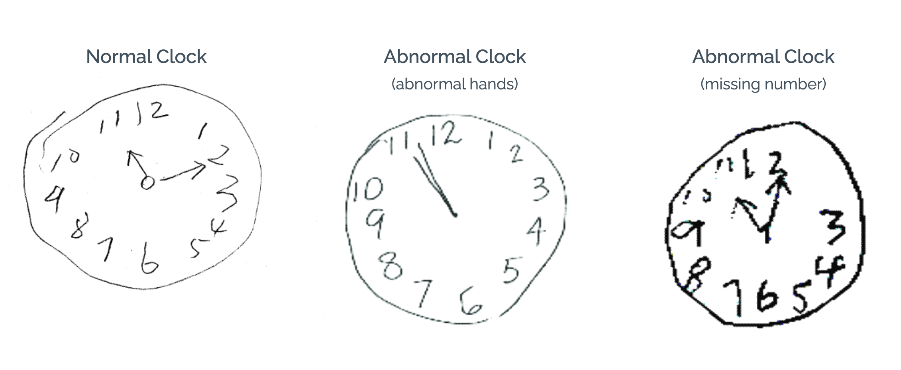

<ng-container *transloco="let t">
<ion-header [translucent]="true">
  <ion-toolbar>
    <ion-title>{{t("SCORE_CLOCK.TITLE")}}</ion-title>
  </ion-toolbar>
</ion-header>

<ion-content [fullscreen]="true">
  <ion-header collapse="condense">
    <ion-toolbar>
      <ion-title size="large">{{t("SCORE_CLOCK.TITLE")}}</ion-title>
    </ion-toolbar>
  </ion-header>

  <div
    class="border-2 border-dashed surface-border border-round surface-ground flex-auto flex justify-content-center align-items-center font-medium">


    <!--       <p-selectButton
    style="text-align: center;"
    [options]="stateOptions"
    [(ngModel)]="value"
    optionLabel="label"
    optionValue="value" />   -->

    <!--    <ul>
        <li>Normal clock = 2 points. A normal clock has all numbers placed in the correct sequence and approximately correct position (e.g., 12, 3, 6 and 9 are in anchor positions) with no missing or duplicate numbers. Hands are pointing to the 11 and 2 (11:10).</li>

        <li>Inability or refusal to draw a clock (abnormal) = 0 points.</li>
    </ul>
     -->
    <h1>{{t("SCORE_CLOCK.SCORE_BASIS")}}</h1>
    <ul>

      <li>{{t("SCORE_CLOCK.CORRECT_CLOCK")}}</li>
      <li>{{t("SCORE_CLOCK.CORRECT_HANDS")}}</li>
    </ul>
    


<div class="x-center">

 
    <p-messages severity="info"  aria-label="Information about the length of the clock hands">
      <ng-template pTemplate>
        <div class="ml-2"> {{t("SCORE_CLOCK.HAND_INFO")}}
        </div>
      </ng-template>
    </p-messages>
  </div>
<!-- 
    <div>  
    <p-radioButton 
    name="pizza" 
    value="0" 
    [(ngModel)]="clockPoints" 
    inputId="ingredient1" />
<label for="ingredient1" class="ml-2">
    0 point
</label>

<p-radioButton 
name="pizza" 
value="2" 
[(ngModel)]="clockPoints" 
inputId="ingredient1" />
<label for="ingredient1" class="ml-2">
2 points
</label>
</div> -->


  </div>
  <div class="ion-text-center " style="margin-bottom:1rem">
    <ion-button     (click)="navigate(0)"  aria-label="continue"   >+0 Points.  {{t("SCORE_CLOCK.CONTINUE")}}</ion-button>
  </div>

  <div class="ion-text-center ">
    <ion-button  (click)="navigate(2)"  aria-label="continue"   >+ 2 Points. {{t("SCORE_CLOCK.CONTINUE")}}</ion-button>
  </div>

</ion-content>

</ng-container>
